정보처리산업기사 (2011-06-12 기출문제)
1과목: 데이터 베이스
1. 다음 설명에 해당하는 스키마의 종류는?
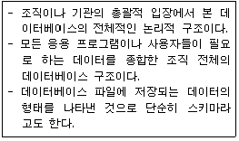
- 개념 스키마
- 내부 스키마
- 외부 스키마
- 관계 스키마
(정답률: 77%)

2. 다음 트리에 대한 운행 결과의 순서가 "A→B→D→C→E→G→H→F"일 경우, 적용된 운행 기법은?
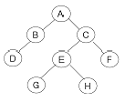
- Pre-order
- Post-order
- In-order
- Last-order
(정답률: 73%)
3. 다음 ( )에 알맞은 용어는?
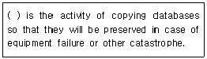
- Concurrency Control
- Backup
- Normalization
- Transaction
(정답률: 78%)
4. 데이터베이스의 정의로 옳지 않은 것은?
- 자료의 중복을 허용하는 데이터의 모임이다.
- 컴퓨터가 접근할 수 있는 저장 매체에 저장된 자료이다.
- 조직의 존재 목적이나 유용성 면에서 존재 가치가 확실한 필수적 데이터이다.
- 여러 응용 시스템들이 공동으로 소유하고 유지하는 자료이다.
(정답률: 83%)
5. 뷰(VIEW)에 대한 설명으로 옳지 않은 것은?
- ALTER VIEW 문을 사용하여 뷰의 정의를 변경한다.
- 논리적 데이터 독립성을 제공한다.
- 독자적인 인덱스를 가질 수 없다.
- 데이터 접근 제어로 보안을 제공한다.
(정답률: 66%)
6. 데이터베이스 설계 과정 중 개념적 설계 단계에 대한 설명으로 옳지 않은 것은?
- 산출물로 개체 관계도(ER-D)가 만들어진다.
- DBMS에 독립적인 개념 스키마를 설계한다.
- 트랜잭션 인터페이스를 설계한다.
- 논리적 설계 단계의 전 단계에서 수행된다.
(정답률: 64%)
7. 비선형 자료구조에 해당하는 것으로만 짝지어진 것은?
- 스택, 큐
- 큐, 트리, 그래프
- 트리, 그래프, 스택
- 트리, 그래프
(정답률: 79%)
8. 오너-멤버(owner-member) 관계와 관련되는 논리적 데이터 모델은?
- 관계형 데이터 모델
- 네트워크 데이터 모델
- 계층형 데이터 모델
- 분산 데이터 모델
(정답률: 80%)
9. 다음 그림에서 트리의 차수는?
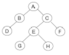
- 2
- 3
- 4
- 8
(정답률: 74%)
10. 다음 자료를 버블 정렬을 이용하여 오름차순으로 정렬 하고자 할 경우 1회전 후의 결과는?
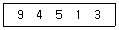
- 4, 5, 1, 3, 9
- 1, 3, 4, 5, 9
- 4, 1, 3, 5, 9
- 1, 3, 9, 4, 5
(정답률: 83%)
11. 큐의 응용 분야로 적합한 것은?
- 함수 호출
- 수식 계산
- 작업 스케줄링
- 인터럽트 처리
(정답률: 72%)
12. 릴레이션의 특징으로 옳지 않은 것은?
- 모든 튜플은 서로 같은 값을 갖는다.
- 각 속성은 릴레이션 내에서 유일한 이름을 가지며, 속성의 순서는 큰 의미가 없다.
- 하나의 릴레이션에서 튜플의 순서는 없다.
- 모든 속성 값은 원자 값이다.
(정답률: 78%)
13. SQL은 사용 용도에 따라 정의어, 조작어, 제어어로 구분할 수 있다. 다음 중 성격이 다른 하나는?
- CREATE
- ALTER
- DROP
- INSERT
(정답률: 78%)
14. 시스템 카탈로그에 대한 설명으로 옳지 않은 것은?
- 기본 테이블, 뷰, 인덱스, 데이터베이스, 접근 권한 등의 정보를 저장한다.
- 시스템 카탈로그에 저장되는 내용을 메타데이터라고도 한다.
- 시스템 자신이 필요로 하는 스키마 및 여러 가지 객체에 관한 정보를 포함하고 있다.
- 시스템 테이블이므로 일반 사용자는 내용을 검색할 수 없다.
(정답률: 83%)
15. 파일 조직 기법 중 순차 파일에 대한 설명으로 옳지 않은 것은?
- 레코드 사이에 빈 공간이 존재하지 않으므로 기억장치의 효율적 이용이 가능하다.
- 레코드들이 순차적으로 처리되므로 대화식 처리보다 일괄 처리에 적합한 구조이다.
- 필요한 레코드를 삽입, 삭제하는 경우 파일을 재구성해야 하므로 파일 전체를 복사해야 한다.
- 데이터 검색시 검색 효율이 높다.
(정답률: 66%)
16. 데이터베이스의 구성 요소 중 개체(Entity)에 대한 설명으로 적합하지 않은 것은?
- 속성들이 가질 수 있는 모든 값들의 집합이다.
- 데이터베이스에 표현하려고 하는 현실 세계의 대상체이다.
- 유형, 무형의 정보로서 서로 연관된 몇 개의 속성으로 구성된다.
- 파일의 레코드에 대응하는 것으로 어떤 정보를 제공하는 역할을 수행한다.
(정답률: 50%)
17. 제 2정규형에서 제 3정규형이 되기 위한 조건은?
- 부분 함수 종속 제거
- 이행 함수 종속 제거
- 원자 값이 아닌 도메인을 분해
- 결정자가 후보 키가 아닌 함수 종속 제거
(정답률: 78%)
18. 관계해석에 대한 설명으로 옳은 내용 모두를 나열한 것은?
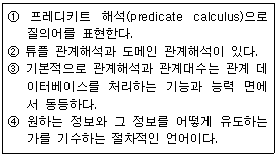
- ①, ④
- ②, ③, ④
- ④
- ①, ②, ③
(정답률: 71%)
19. 학생 테이블에서 학번이 “1144077”인 학생의 학년을 “2”로 수정하기 위한 SQL 질의어는?
- UPDATE 학년=“2” FROM 학생 WHERE 학번=“1144077”;
- UPDATE 학생 SET 학년=“2” WHERE 학번=“1144077”;
- UPDATE FROM 학생 SET 학년=“2” WHERE 학번= “1144077”
- UPDATE 학년=“2” SET 학생 WHEN 학번=“1144077”;
(정답률: 65%)
20. The days of week (MONDAY, TUESDAY, WEDNESDAY, THURSDAY, FRIDAY, SATURDAY, SUNDAY) is a data object. Which is the proper structure of the days of week?
- tree
- linked list
- graph
- array
(정답률: 67%)
2과목: 전자 계산기 구조
21. 가상기억장치에 대한 설명으로 틀린 것은?
- 실행시킬 프로그램을 여러 개의 블록으로 만들어 보조 기억장치에 보관해놓고 실행 시 필요한 블록만 주기억 장치에 적재하여 멀티프로그래밍의 효율을 높일 수 있다.
- 가상기억장치로 사용하는 보조기억장치는 직접 접근 기억장치로 보통 디스크를 사용한다.
- 주소 매핑은 가상 주소를 실기억 주소로 조정하여 변환하는 것이다.
- 보조기억장치는 자기테이프가 많이 사용된다.
(정답률: 59%)
22. 특정의 비트 또는 특정의 문자를 삭제하기 위해 가장 필요한 연산은?
- OR 연산
- MOVE 연산
- Complement 연산
- AND 연산
(정답률: 56%)
23. 3-초과 코드(Excess-3 code)의 설명으로 옳지 않은 것은?
- 가중치 코드이다.
- 자보수 코드이다.
- 모든 비트가 동시에 0이 되는 일이 없다.
- 10진수를 표현하기 위한 코드이다.
(정답률: 44%)
24. hardwired control 방법으로 제어장치를 구현할 때 설명이 잘못된 것은?
- 논리 회로 설계기법에 의해서 제어신호를 생성하는 방법이다.
- RISC 구조를 기본으로 하는 컴퓨터에서 주로 많이 사용된다.
- 동작속도를 빠르게 할 수 있다.
- instruction set을 갱신(update)하기가 용이하다.
(정답률: 51%)
25. 다음 중 인터럽트 수행 후에 처리되는 것은?
- 전원을 다시 동작시킨다.
- 모니터 화면에 인터럽트 종류를 디스플레이 한다.
- 메모리의 내용을 지워서 다른 프로그램이 적재될 수 있도록 한다.
- 인터럽트 처리시 보존시켰던 PC 및 제어상태 데이터를 PC와 제어상태 레지스터에 복구한다.
(정답률: 77%)
26. 부동소수점 연산의 일반적인 형식은?
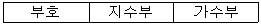
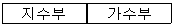
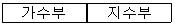
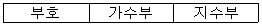
(정답률: 72%)
27. 적중률(hit ratio)은 어느 메모리와 관계있는가?
- ROM
- 컴퓨터의 C드라이브
- 캐시 메모리
- CD 드라이브
(정답률: 66%)
28. 14개의 어드레스 비트는 몇 개의 메모리 장소의 내용을 리드(read)할 수 있는가?
- 14
- 140
- 16384
- 32768
(정답률: 67%)
29. 논리 마이크로 연산을 수행하기 위하여 다음과 같은 식이 주어졌을 때 옳지 않은 것은?
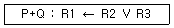
- P가 1이면 R1의 내용은 변할 수도 있다.
- P 또는 Q가 1이면 데이터 전송이 일어난다.
- “V"는 논리 마이크로 연산 OR를 나타낸다.
- “+”는 덧셈 마이크로 연산을 나타낸다.
(정답률: 48%)
30. 입출력장치와 주기억장치의 가장 큰 차이점은?
- 동작의 초기화
- 착오 발생률
- 동작속도
- 전송단위
(정답률: 73%)
31. parity bit에 대한 설명으로 옳은 것은?
- error 검출용 bit 이다.
- bit 위치에 따라 weight 값을 갖는다.
- BCD code에서만 사용한다.
- error bit 이다.
(정답률: 77%)
32. Unpacked decimal 형식으로 (543)10을 표현한 것은?
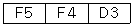
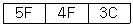
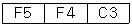
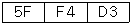
(정답률: 57%)
33. 부동소수점(floating point)숫자 연산에서 정규화(normalize)를 하는 주된 이유는?
- 연산속도를 증가시키기 위해서이다.
- 숫자표시를 간단히 하기 위해서이다.
- 유효숫자를 늘리기 위해서 이다.
- 연산결과의 정확성을 높이기 위해서이다.
(정답률: 36%)
34. 명령어의 op_code(명령 코드)는 어느 레지스터에서 이용하는가?
- flag register
- index register
- address register
- instruction register
(정답률: 52%)
35. 다음 회로의 명칭은?
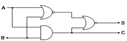
- Coincidence 회로
- EX-OR 회로
- Subtract 회로
- Half-adder 회로
(정답률: 54%)
36. 하드 디스크 드라이브(HDD)와 비슷하게 동작하면서 기계적 장치인 HDD와는 달리 반도체를 이용하여 정보를 저장하는 것은?
- CDD
- SSD
- 캐시 메모리
- DVD
(정답률: 70%)
37. 보수연산에 있어서 부호화된 2의 보수를 이용하여 계산할 때, 부호화된 1의 보수를 이용하여 계산하는 경우에 비해 갖는 장점은?
- 산술연산속도가 빠르다.
- 산술가산에서 올림수가 발생하면 1을 더해주면 된다.
- 양수표현에 있어 유리하다.
- 산술가산에서 올림수가 발생하면 무시한다.
(정답률: 40%)
38. 1의 보수에 의해 표현된 수를 좌측으로 1bit 산술shift 하는 경우 입력되는 비트는?
- 1
- 0
- sign bit
- LSB(Least Significant Bit)
(정답률: 44%)
39. DRAM에 대한 설명으로 옳지 않은 것은?
- 대용량 임시기억장치로 사용된다.
- refresh 회로가 필요하다.
- 플립플롭의 원리를 이용한다.
- 전하의 충방전 원리를 이용한다.
(정답률: 47%)
40. 그림과 같은 전가산기(Full Adder)의 입력이 A=1, B=0, C=1 일 때 출력 So(합)와 Co(캐리)는?
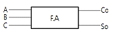
- Co=0, So=0
- Co=0, So=1
- Co=1, So=0
- Co=1, So=1
(정답률: 55%)
3과목: 시스템분석설계
41. 표준 처리 패턴 중 파일 내의 데이터와 대조 파일에 있는 데이터 중 동일한 것들만 골라서 파일을 만드는 것은?
- Collate
- Extract
- Distribution
- Generate
(정답률: 59%)
42. 사용자의 요구 사항을 정확히 파악하기 위하여 최종 결과물의 일부 혹은 모형을 만들어 의사소통의 도구로 활용하여 개발하는 소프트웨어 생명 주기 모형은?
- 폭포수 모델
- 프로토타이핑 모델
- 나선형 모델
- RAD 모델
(정답률: 70%)
43. 코드 설계 절차의 순서로 옳은 것은?
- 코드 대상 항목 결정→코드화 목적 설정→사용기간의 결정→사용범위의 결정→코드 대상의 특성 분석→코드화 방식 결정→코드의 문서화
- 코드 대상 항목 결정→코드화 목적 설정→사용범위의 결정→사용기간의 결정→코드 대상의 특성 분석→코드화 방식 결정→코드의 문서화
- 코드 대상 항목 결정→코드화 목적 설정→코드 대상의 특성 분석→사용범위의 결정→사용기간의 결정→코드화 방식 결정→코드의 문서화
- 코드 대상 항목 결정→코드화 목적 설정→코드 대상의 특성 분석→코드화 방식 결정→사용범위의 결정→사용기간의 결정→코드의 문서화
(정답률: 44%)
44. 문서화(Documentation)의 목적에 대한 설명으로 거리가 먼 것은?
- 시스템 개발 중 추가 변경에 따른 혼란 방지
- 시스템의 개발 요령과 순서를 표준화하여 보다 효율적인 작업 도모
- 개발 후 시스템 유지 보수의 용이
- 시스템 개발 과정의 요식 행위화
(정답률: 76%)
45. 하나 이상의 유사한 객체를 묶어서 하나의 공통된 특성을 표현한 것으로 데이터 추상화의 개념으로 볼 수 있는 것은?
- 클래스
- 메소드
- 객체
- 메시지
(정답률: 70%)
46. 코드의 기능으로 거리가 먼 것은?
- 식별 기능
- 분류 기능
- 배열 기능
- 호환 기능
(정답률: 65%)
47. 대화형 입출력 방식 중 화면에 여러 개의 항목을 진열하고 그 중의 하나의 선택 도구로 지정하여 직접 실행하는 방식으로 직접 조작 방식이라고도 하는 것은?
- 프롬프트 방식
- 메뉴 방식
- 항목 채우기 방식
- 아이콘 방식
(정답률: 58%)
48. 시스템의 특성 중 시스템이 오류 없이 그 기능을 발휘하려면 정해진 한계 또는 궤도로부터 이탈되는 사태나 현상의 발생을 사전에 감지하여 그것을 바르게 수정하는 것은?
- 목적성
- 종합성
- 자동성
- 제어성
(정답률: 75%)
49. 시스템의 기본 요소 중 처리된 결과가 정확하지 않으면 결과의 일부나 오차를 다음 단계에 다시 입력하여 한 번 더 처리하는 것을 의미하는 것은?
- Output
- Process
- Control
- Feedback
(정답률: 79%)
50. 출력 설계 순서가 옳은 것은?
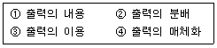
- ①→④→②→③
- ④→②→③→①
- ②→③→①→④
- ③→①→④→②
(정답률: 64%)
51. 코드의 종류 중 코드화 대상 항목을 자료의 발생순서, 크기순서, 가나다라 순서 등과 같이 어떤 일정한 기준에 따라 일련번호를 부여하는 것은?
- block code
- group code
- sequence code
- decimal code
(정답률: 60%)
52. 파일의 종류 중 통계 처리나 파일의 자료에 잘못이 발생 하였을 때, 파일을 원상 복구하기 위해 사용되며, 현재까지 변화된 정보를 포함하는 것으로 기록 파일 또는 이력파일이라고도 하는 것은?
- 트레일러 파일
- 히스토리 파일
- 트랜잭션 파일
- 요약 파일
(정답률: 75%)
53. 프로세스 설계시 고려사항으로 거리가 먼 것은?
- 정보의 양과 질에 유의한다.
- 프로세스 전개의 사상을 통일한다.
- 분류처리는 가급적 최대화한다.
- 오퍼레이터의 개입을 최소화한다.
(정답률: 69%)
54. 검사의 종류 중 대차대조표에서 대변과 차변의 합계를 비교, 체크하는 것과 같이 입력 정보의 여러 데이터가 특정 항목 합계 값과 같다는 사실을 알고 있을 때 컴퓨터를 이용해서 계산한 결과와 분명히 같은지를 체크하는 방법은?
- Blank Check
- Matching Check
- Limit Check
- Balance Check
(정답률: 63%)
55. 모듈 작성시 주의사항으로 옳지 않은 것은?
- 응집도를 최소화하고 결합도를 최대화한다.
- 적절한 크기로 작성한다.
- 보기 좋고 이해하기 쉽게 작성한다.
- 다른 곳에서도 적용이 가능하도록 표준화한다.
(정답률: 74%)
56. 자료 사전에 사용되는 기호 중 반복을 의미하는 것은?
- +
- ( )
- [ ]
- { }
(정답률: 62%)
57. 원시코드 라인수(LOC)기법에 의하여 예측된 총 라인수가 30000라인, 개발에 참여할 프로그래머가 5명, 프로그래머들의 평균생산성이 월간 200라인 일 때, 개발에 소요되는 기간은?
- 10개월
- 15개월
- 20개월
- 30개월
(정답률: 69%)
58. 출력 설계 단계 중 출력 정보 분배에 대한 설계시 검토 사항으로 거리가 먼 것은?
- 분배 책임자
- 분배 경로
- 분배 주기 및 시기
- 출력 정보명
(정답률: 57%)
59. 파일 설계 순서로 옳은 것은?
- 작성 목적 확인 -> 매체의 검토 -> 특성 조사 -> 항목 검토 -> 편성법 검토
- 작성 목적 확인 -> 항목 검토 -> 특성 조사 -> 매체의 검토 -> 편성법 검토
- 작성 목적 확인 -> 항목 검토 -> 편성법 검토 -> 특성 조사 -> 매체의 검토
- 작성 목적 확인 -> 특성 조사 -> 검토 -> 매체의 검토 -> 편성법 검토
(정답률: 63%)
60. 해싱 함수에 의한 주소 계산 기법에서 서로 다른 키 값에 의해 동일한 주소 공간을 점유하여 충돌되는 레코드들의 집합을 의미하는 것은?
- Division
- Chaining
- Collision
- Synonym
(정답률: 65%)
4과목: 운영체제
61. 3 페이지가 들어갈 수 있는 기억장치에서 다음과 같은 순서로 페이지가 참조될 때 FIFO 기법을 사용하면 페이지부재(page fault)는 몇 번 발생하는가? (단, 현재 기억장치는 모두 비어 있다고 가정한다.)
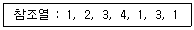
- 4
- 5
- 6
- 8
(정답률: 64%)
62. 라운드로빈(Round-Robin) 방식으로 스케줄링 할 경우, 입력된 작업이 다음과 같고 각 작업의 CPU 할당 시간이 3시간일 때, CPU의 사용 순서가 알맞게 나열된 것은?
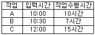
- A A A A B B B C C C C C
- A A A A C C C C C B B B
- A B C A B C A C A C C B
- A B C A B C A B C A C C
(정답률: 65%)
63. 페이지 교체 알고리즘 중 각 페이지마다 계수기나 스택을 두어 현 시점에서 가장 오랫동안 사용하지 않은 페이지를 교체하는 것은?
- LFU
- SCR
- FIFO
- LRU
(정답률: 71%)
64. 운영체제에 대한 설명으로 옳지 않은 것은?
- 사용자와 시스템 간의 용이한 인터페이스를 제공한다.
- 프로그램 실행을 위한 목적 프로그램을 생성한다.
- 자원의 효과적 관리 및 스케줄링을 수행한다.
- 시스템의 오류를 검사하고 복구한다.
(정답률: 58%)
65. 가상기억장치(virtual memory)의 일반적인 구현방법으로 가장 적합한 것은?
- 스래싱(thrashing), 집약(compaction)
- 세그멘테이션(segmentation), 스래싱(thrashing)
- 모니터(monitor), 오버레이(overlay)
- 페이징(paging), 세그멘테이션(segmentation)
(정답률: 67%)
66. 디렉토리 구조 중 다음 설명에 해당하는 것은?
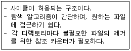
- 일반적인 그래프 디렉토리 구조
- 단일 디렉토리 구조
- 2단계 디렉토리 구조
- 트리 디렉토리 구조
(정답률: 52%)
67. UNIX 명령 중 현재 디렉토리 내의 파일 목록을 확인 할 때 사용하는 것은?
- open
- finger
- ls
- chown
(정답률: 72%)
68. 운영체제의 성능 평가 기준 중 시스템이 주어진 문제를 정확하게 해결하는 정도를 의미하는 것은?
- Throughput
- Reliability
- Turn Around Time
- Availability
(정답률: 48%)
69. 디스크 헤드의 현 위치는 50 트랙이며, 안쪽 방향으로 진행 중이다. SSTF 방식을 사용할 경우 다음 디스크 대기큐에서 가장 먼저 처리되는 트랙은? (단, 트랙번호가 작은 쪽이 안쪽 방향임)
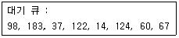
- 14
- 37
- 60
- 183
(정답률: 61%)
70. 13K의 작업을 다음 그림의 14K 공백의 작업공간에 할당 했을 경우 사용된 기억장치 배치전략 기법은?
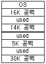
- Last fit
- First fit
- Best fit
- Worst fit
(정답률: 76%)
71. 임계구역의 원칙으로 옳지 않은 것은?
- 두 개 이상의 프로세스가 동시에 사용할 수 있다.
- 순서를 지키면서 신속하게 사용한다.
- 하나의 프로세스가 독점하게 해서는 안 된다.
- 임계구역이 무한 루프에 빠지지 않도록 주의해야 한다.
(정답률: 71%)
72. 병렬처리의 주종(master/slave) 시스템에 대한 설명으로 옳지 않은 것은?
- 주프로세서는 연산만 수행하고 종프로세서는 입·출력과 연산을 수행한다.
- 주프로세서만이 운영체제를 수행한다.
- 하나의 주프로세서와 나머지 종프로세서로 구성된다.
- 주프로세서의 고장시 전체 시스템이 멈춘다.
(정답률: 68%)
73. 다음 접근제어 리스트에서 “파일1”이 처리될 수 없는 것은?(단, 여기서 R=읽기, W=쓰기, P=인쇄, L=공유)
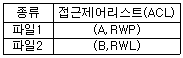
- 읽기
- 쓰기
- 인쇄
- 공유
(정답률: 73%)
74. HRN 스케줄링 기법을 적용할 경우 우선순위가 가장 낮은 것은?
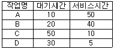
- A
- B
- C
- D
(정답률: 65%)
75. UNIX에서 파일 시스템 전체에 대한 종합적인 정보를 저장하고 있는 블록은?
- 슈퍼 블록
- 부트 블록
- 데이터 블록
- I-node 블록
(정답률: 50%)
76. 교착상태 발생의 필요조건이 아닌 것은?
- 상호 배제
- 환형 대기
- 점유와 대기
- 자원의 선점
(정답률: 56%)
77. 사용자 Password에 대한 설명으로 옳지 않은 것은?
- 추측 가능한 사용자의 전화번호, 생년월일 등으로는 구성하지 않는 것이 바람직하다.
- 암호가 짧을수록 추측에 의한 암호 발각 가능성이 희박하다.
- 암호는 자주 변경하는 것이 바람직하다.
- 불법 액세스를 방지하는데 사용된다.
(정답률: 79%)
78. 분산처리 운영체제 시스템의 특징으로 거리가 먼 것은?
- 시스템 설계의 단순화
- 연산 속도 향상
- 자원 공유
- 신뢰성 증진
(정답률: 70%)
79. 프로세스(Process)를 가장 바르게 정의한 것은?
- 프로그래머가 작성한 원시 프로그램이다.
- 컴파일러에 의해 번역된 기계어 프로그램이다.
- 컴퓨터에 의해 실행 중인 프로그램으로 운영체제가 관리하는 최소 단위의 작업이다.
- 응용프로그램과 시스템프로그램 모두를 일컫는 용어이다.
(정답률: 67%)
80. SJF(Shortest Job First) 스케줄링에서 작업 도착시간과 CPU 사용시간은 다음 표와 같다. 모든 작업들의 평균 대기시간은 얼마인가?(문제 오류로 실제 시험장에서는 모두 정답 처리 되었습니다. 여기서는 1번을 정답 처리 합니다.)
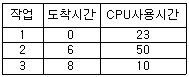
- 12
- 15
- 20
- 25
(정답률: 70%)
5과목: 정보통신개론
81. 다음 중 전송회선의 특성과 거리가 먼 것은?
- 동축케이블은 평형케이블보다 대역폭이 넓으며, 고속의 데이터 전송이 가능하다.
- 평형케이블은 동축케이블보다 혼선, 감쇄, 전송 지연이 적다.
- 광섬유케이블은 온도변화에 안정적이며 신뢰성이 높다.
- 동축케이블은 초고주파대의 전송로에 적합하다.
(정답률: 50%)
82. 비동기식 전송방식의 설명 중 옳지 않은 것은?
- 각 데이터의 앞과 뒤에 start bit와 stop bit를 첨가한다.
- 문자단위로 동기를 맞춘다.
- 수신측에서는 parity bit를 이용하여 오류를 검출한다.
- 주로 장거리 전송에 이용되며 고속전송에 적합하다.
(정답률: 49%)
83. 음성신호를 PCM(pulse code modulation) 방식을 통해 송신측에서 디지털 신호로 변환하는 과정은?
- 표본화 -> 양자화 -> 부호화
- 부호화 -> 양자화 -> 표본화
- 양자화 -> 표본화 -> 부호화
- 표본화 -> 부호화 -> 양자화
(정답률: 74%)
84. 다음 중 16-QAM에서 16은 무엇의 개수를 나타내는가?
- 위상
- 진폭
- 위상과 진폭의 조합
- 위상과 주파수의 조합
(정답률: 62%)
85. 어떤 회사에 8개의 장치가 완전히 연결된 망형 네트워크를 가지고 있다. 최소로 필요한 케이블의 연결 수(C)와 각 장치당 포트 수(P)는?
- C=28, P=7
- C=28, P=8
- C=32, P=7
- C=32, P=8
(정답률: 49%)
86. 송신측에서 1개의 프레임을 전송한 다음 수신측에서 오류의 발생을 점검하여 ACK 또는 NAK를 보내올 때 까지 기다리는 방식은?
- 전진 오류 점검
- 적응적 ARQ
- 연속적 ARQ
- 정지 대기 ARQ
(정답률: 70%)
87. 정보통신시스템의 회선구성 방식과 거리가 먼 것은?
- 점-대-점(Point-to-Point) 방식
- 다중점(Multi-point) 방식
- 비동기식 전송방식
- 다중화 방식
(정답률: 48%)
88. 주파수분할 다중화(FDM)방식에서 보호대역(guard band)이 필요한 이유는?
- 신호의 세기를 크게 하기 위함이다.
- 주파수 대역폭을 넓히기 위함이다.
- 채널의 신호를 혼합하기 위함이다.
- 채널간의 간섭을 막기 위함이다.
(정답률: 74%)
89. 프레임을 송신, 수신하는 스테이션을 구별하기 위해 사용되는 스테이션 식별자 필드는?
- 주소 필드
- 프레임 검사 필드
- 제어 필드
- 플래그 필드
(정답률: 40%)
90. 다음 중 HDLC의 Frame 구성 순서는? (단, A: Address, F: Flag, C: Control, I: Information, FCS: Frame Check Sequence)
- I->C->A->F->FCS->F
- C->F->I->FCS->A->F
- F->A->C->I->FCS->F
- F->FCS->A->C->I->F
(정답률: 63%)
91. 디지털신호를 아날로그신호로 변환하는 신호변환장치에 해당하는 것은?
- 디멀티플렉서
- 변복조장치
- 디지털서비스유니트
- 멀티플렉서
(정답률: 57%)
92. 정보통신에서 데이터 회선종단장치와 터미널 사이의 물리적, 전기적 접속규격은?
- LAB-P
- RS-232C
- X.25
- TCP/IP
(정답률: 57%)
93. LAN으로 널리 이용되는 이더넷(Ethernet)에서 사용되는 방식은?
- CSMA/CD
- CDMA
- TOKEN-BUS
- DQDB
(정답률: 65%)
94. 데이터 교환방식 중 패킷교환 방식의 특징이 아닌 것은?
- 통신 장애발생시 대체 경로 선택이 가능하다.
- 패킷형태로 만들어진 데이터를 패킷교환기가 목적지 주소에 따라 통신경로를 선택해주는 방식이다.
- 프로토콜 변환이 가능하고 디지털 전송방식에 사용된다.
- 데이터 전송 단위는 메시지이고, 교환기가 호출자의 메시지를 받아 축적한 후 피호출자에게 보내주는 방식이다.
(정답률: 55%)
95. 다음 중 정보의 전달을 위한 단계가 순서대로 옳은 것은?
- 링크확립-회로연결-메시지전달-회로절단-링크절단
- 링크확립-회로연결-메시지전달-링크절단-회로절단
- 회로연결-링크확립-메시지전달-회로절단-링크절단
- 회로연결-링크확립-메시지전달-링크절단-회로절단
(정답률: 63%)
96. LAN에서 중앙의 교환기가 고장이 나면 시스템이 일시에 통신 불능이 되는 토폴로지(topology)는?
- 링(Ring)
- 버스(Bus)
- 스타(Star)
- 트리(Tree)
(정답률: 72%)
97. OSI-7 계층에서 다음 설명에 해당되는 계층은?
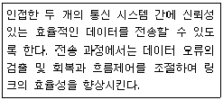
- 물리 계층
- 데이터링크 계층
- 응용 계층
- 표현 계층
(정답률: 71%)
98. 이동통신망에서 통화중인 이동국이 현재의 셀에서 벗어나 다른 셀로 진입하는 경우, 셀이 바뀌어도 중단 없이 통화를 계속할 수 있게 해주는 것은?
- 핸드오프(hand off)
- 다이버시티(diversity)
- 셀분할(cell splitting)
- 로밍(roaming)
(정답률: 64%)
99. 다음 중 동종의 네트워크(LAN)를 상호 연결하는데 사용되는 것은?
- 모뎀
- 서버
- PAD
- 브리지
(정답률: 61%)
100. 정보통신시스템의 데이터 전송계에 해당되지 않는 것은?
- 호스트 컴퓨터
- 단말장치
- 통신제어장치
- 데이터 전송회선
(정답률: 53%)
이유는 다음과 같습니다.
- 스키마의 구성요소들이 어떤 속성들로 이루어져 있는지, 그리고 이들 속성들 간의 관계가 어떻게 되는지 등을 나타내는 스키마를 "개념 스키마"라고 합니다.
- 개념 스키마는 데이터베이스의 전체적인 구조를 나타내며, 데이터베이스의 사용자나 응용 프로그램들이 데이터베이스에 접근할 때 필요한 정보를 제공합니다.
- 개념 스키마는 데이터베이스 설계 단계에서 가장 먼저 작성되며, 이후에 내부 스키마와 외부 스키마가 생성됩니다.
- 따라서, 주어진 스키마가 데이터베이스의 구조를 나타내며, 데이터베이스 사용자나 응용 프로그램들이 데이터베이스에 접근할 때 필요한 정보를 제공한다면, 이는 개념 스키마입니다.